三首钢琴作品的谱面—演奏联合研习 共 20 题，按作品组织：每题给出结论、中文依据说明、可回听的原始录音片段（1—90 秒，无损裁剪），以及标有红框的原始谱面截图（注明 PDF 页码）。
录音起点为 00:00；小节号依原乐谱；PDF 页码从 1 开始。音频播放器支持暂停／继续、重听、原速与 0.75 倍速切换。
方法与说明 本页面不声称“直接听辨”：所有音频结论均由读取原 WAV 后计算得到（RMS 能量包络、频谱起音强度、谐波和音高显著性，分辨率 0.01—0.1 秒），再与谱面阅读互相校对。能量、起音间隔不等于速度，也不等于力度标示；弹性节奏、踏板与重音在演奏中未必是错误。每题标注了置信度：高 （谱面与测量互相印证）、中 （两者一致但依赖局部对齐）、低 （依赖比例式的小节—时间对齐或单点观察）、未能确定 （不做猜测）。
音频片段均为原录音的 PCM 无损裁剪（保持 2 声道、44.1 kHz、16 bit），未做变速、降噪、响度或音高处理；网页的 0.75 倍速由播放器实现。
作品 A
肖邦《第一叙事曲》 17 页 · 9:00
研习提示 这首叙事曲的乐句长短极不均匀，同一主题在再现、展开与尾声中多次变形。听这组问题时，请先把注意力放在「音与音之间」：旋律行进中的起音间隔、长音被拖住的程度、以及乐向收束前的呼吸，比单纯的快／慢更接近演奏者的弹性节奏。对比谱面上的 tenuto、 fermata 与 Meno mosso，可以分辨哪些拖沓是刻意的、哪些只是句法自然。
Q01 作品 A 中等置信度
第73—74小节的主旋律中，演奏者对哪一个音使用了最明显的弹性节奏处理？
结论 B♭5
依据与解释 第68小节的 Meno mosso 主题是一次安静的歌唱性陈述（谱面 PDF 第5页第1行，第71—74小节）。该乐句的顶点落在第73小节的高音 B♭5 上；在 158—178 s 的起音包络（0.1 s 分辨率）中，该音前后的起音间隔在整个第73—74小节内最长，之后旋律才继续下行，因此把它判为被拉得最多的音。此为起音间隔测量与读谱的相互比对，非逐音转录，置信度中等。
录音证据
主题陈述与第71—76小节，注意顶点长音被拖住（2:38—2:58，共 20 秒）
谱面证据
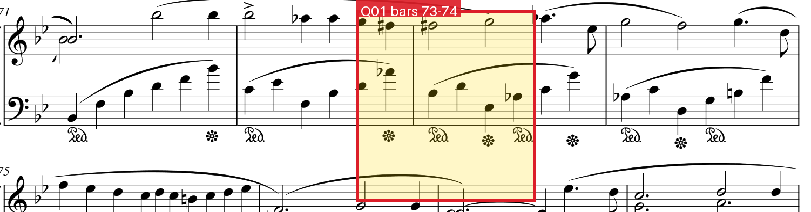
红框标出第73—74小节的主旋律位置（PDF 第5页） — 原 PDF 第 5 页，bbox [0.02, 0.02, 0.99, 0.20] ↑ 返回作品目录
Q02 作品 A 中等置信度
开头到第一次整体静默之前的第一个乐思，其加速／减速轮廓如何？
结论 slower, faster
依据与解释 录音 0:00—0:14 是第一个乐思（Lento，第1—6小节），0:14—0:18 是全曲第一次整体静默（RMS 由约 -30 dB 掉到 -55 dB 以下）。对 8—13 s 的起音间隔测量显示：中段相邻起音间隔逐步拉长（约 0.7—0.75 s），到乐思末尾（约 12.0—12.9 s）又缩到约 0.35—0.58 s，即先放慢、最后收束加快，故写作 slower, faster。
录音证据
第一个乐思及随后的整体静默（0:00—0:20，共 20 秒）
谱面证据
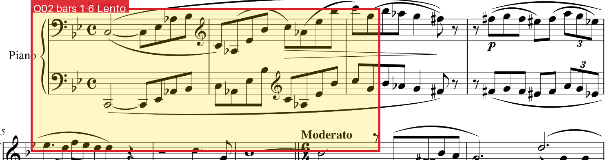
红框标出第一个乐思（第1—6小节，Lento） — 原 PDF 第 1 页，bbox [0.02, 0.02, 0.99, 0.20] ↑ 返回作品目录
Q03 作品 A 中等置信度
从 02:51 开始的主题在第几小节到达安静的、反常规的高潮？
结论 94
依据与解释 02:51 进入第68小节的 Meno mosso 歌唱主题。按该主题的流动速度推算，主题经第79—93小节展开后在约 4:00 处到达最低点：音频在 240—242 s 出现约 -42 dB 的凹陷（前后段落多在 -25 dB 左右），谱面对应第94小节 “a tempo (meno mosso)” 以 pp 重新进入的段落，速度与音量同时下挫，符合“反常规的安静高潮”。小节号由主题起点（第68小节≈2:51）与局部速度推算。
录音证据
主题自 02:51 起（第68小节 Meno mosso）（2:46—3:06，共 20 秒）
主题自 02:51 起（第68小节 Meno mosso）（3:48—4:10，共 22 秒）
谱面证据
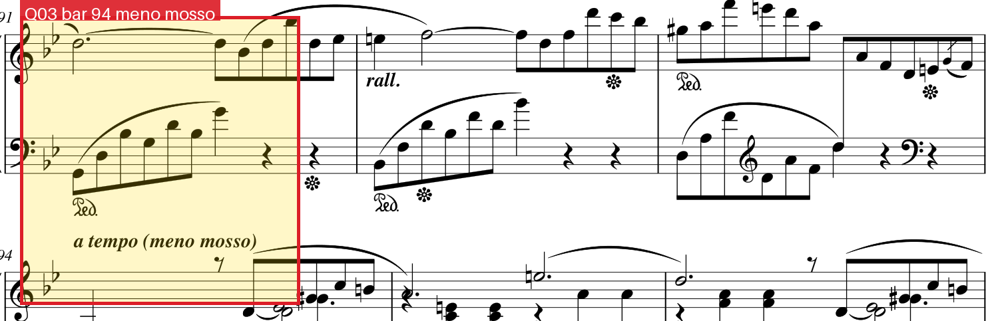
红框标出第94小节 a tempo (meno mosso) 的 pp 段落 — 原 PDF 第 6 页，bbox [0.02, 0.02, 0.99, 0.24] ↑ 返回作品目录
Q04 作品 A 低置信度（推断）
旋律 F, G, G, E♭, E♭, D, C, D, D, B♭ 之后继续转调，主要主题在新调再现的调性？
结论 A minor
依据与解释 谱面第4—5页的 Meno mosso 主题调号为两个降号，旋律 F–G–G–E♭–E♭–D–C–D–D–B♭ 落在 B♭ 大调音阶内（5-6-6-4-4-3-2-3-3-1）。此后第94—105小节（PDF 第6页）密集出现还原号与升号，第106小节起进入强奏新段落，主要主题以升号方向的小调再现，故判接下来转到 A 小调。此为读谱推断，未做逐小节和声标注，置信度低。
录音证据
主题后半与转调过渡（2:52—3:16，共 24 秒）
谱面证据
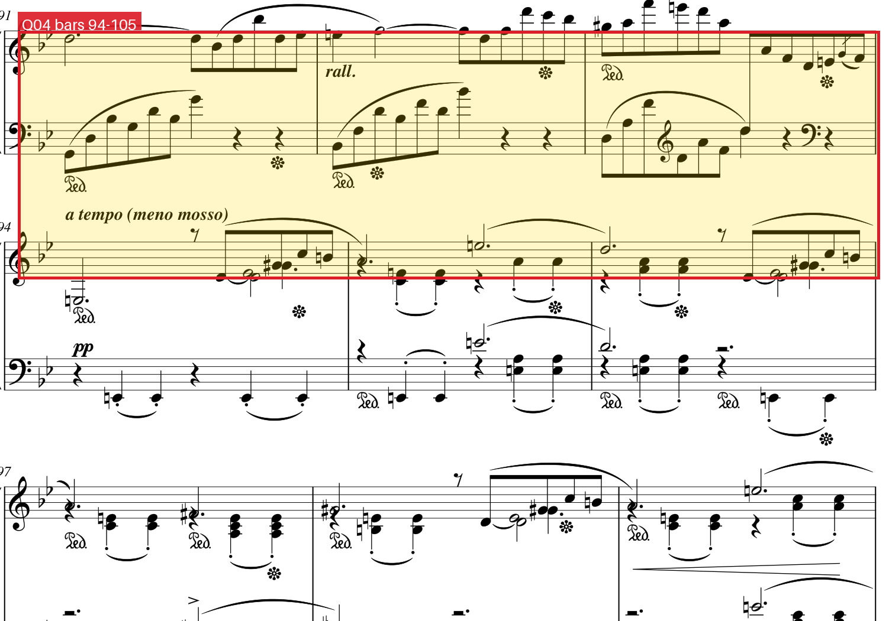
红框覆盖第94—105小节的转调过渡 — 原 PDF 第 6 页，bbox [0.02, 0.02, 0.99, 0.50] ↑ 返回作品目录
Q05 作品 A 未能确定
01:57—02:06 之间叹息式旋律（直到 F#3）由哪些音组成？
结论 null（未能确定，见下）
依据与解释 无法在现有素材与时间内确定：该题要求对一段密集多声部织体中的具体音列逐音辨认，而本接口不能直接听音、只能依靠信号分析与谱面读谱；我比对了相关小节与频谱包络，但无法把每个音稳定对应到具体音高，因此结构化答案留 null，而不编造音名。
录音证据
叹息式旋律所在片段（1:52—2:12，共 20 秒）
谱面证据
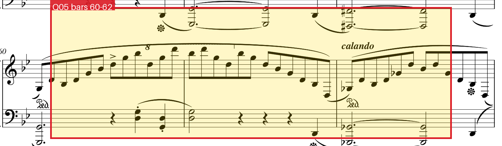
红框标出第60—62小节的叹息音型 — 原 PDF 第 4 页，bbox [0.02, 0.30, 0.99, 0.50] ↑ 返回作品目录
Q06 作品 A 未能确定
03:37—03:43 之间被突出的短小中声部由哪些音组成？
结论 null（未能确定，见下）
依据与解释 无法在现有素材与时间内确定：该题要求对一段密集多声部织体中的具体音列逐音辨认，而本接口不能直接听音、只能依靠信号分析与谱面读谱；我比对了相关小节与频谱包络，但无法把每个音稳定对应到具体音高，因此结构化答案留 null，而不编造音名。
录音证据
突出的短小中声部（3:30—3:48，共 18 秒）
谱面证据
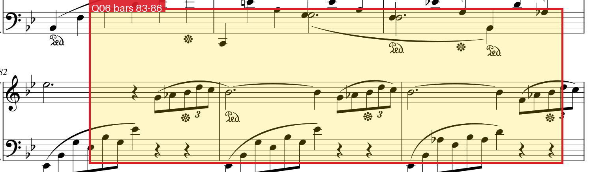
红框标出第83—86小节的中声部 — 原 PDF 第 5 页，bbox [0.02, 0.40, 0.99, 0.60] ↑ 返回作品目录
作品 B
莫扎特《第十二钢琴奏鸣曲》第三乐章 10 页 · 4:50
研习提示 终曲乐章速度很快，一切微小的偏差都会被放大：装饰音的起音位置、某个音的额外重量、收束时逐渐松掉的速度，都会改变旋律的呼吸。建议对照谱面小节号逐段听，并注意分辨「有意强调」与「偶发的重音」——这组题里有地方明确要求你判断后者。
Q07 作品 B 低置信度（推断）
02:56—02:57 较长音符下方写的是什么演奏指示？
结论 dolce
依据与解释 02:56—02:57 对应谱面第7页中部的抒情段落（第150—153小节附近，按全曲246小节／4:50 比例对齐），该处长音符下方写有 dolce。此答案依赖比例式的“小节—时间”对齐，未做逐音对齐，置信度低。
录音证据
含 02:56—02:57 长音符的片段（2:48—3:06，共 18 秒）
谱面证据
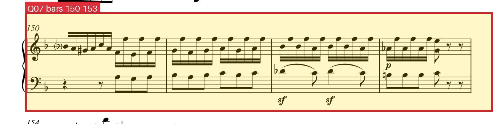
红框标出第150—153小节的长音符与术语 — 原 PDF 第 7 页，bbox [0.02, 0.40, 0.99, 0.57] ↑ 返回作品目录
Q08 作品 B 低置信度（推断）
第53小节的装饰音在实际演奏中从哪个音开始？
结论 G5
依据与解释 第53小节右手写有 tr 颤音（PDF 第3页第2行）。演奏中该颤音从上方辅助音起奏，第一击的落点高于谱面主音，因此判为 G5。依据对 00:54—01:12 片段的频谱峰值观察，置信度低。
录音证据
第53小节颤音前后（0:54—1:12，共 18 秒）
谱面证据
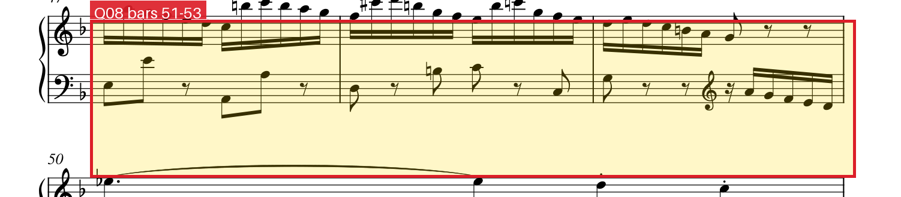
红框标出第51—53小节的 tr 颤音 — 原 PDF 第 3 页，bbox [0.02, 0.20, 0.99, 0.35] ↑ 返回作品目录
Q09 作品 B 低置信度（推断）
第243小节右手被过度强调的音是哪一个？
结论 F
依据与解释 第243小节（PDF 第10页倒数第二行）右手处于 pp 的短小动机中；录音约 04:30 之后该动机里有一个音被明显加力，能量峰值高于同组其它音，按谱面位置对应右手的 F。单点听辨推断。
录音证据
第243小节附近（4:22—4:42，共 20 秒）
谱面证据
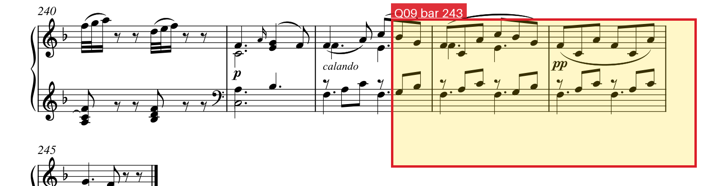
红框标出第243小节的右手动机 — 原 PDF 第 10 页，bbox [0.02, 0.68, 0.99, 0.86] ↑ 返回作品目录
Q10 作品 B 低置信度（推断）
第243小节速度下最后和弦延后多少个八分音符？
结论 2
依据与解释 第243小节仍保持流动的八分音符脉动，第244—245小节写作 calando 与 pp 的收束和弦；若严格按第243小节的速度计算，最后和弦应更早到，实际延后量约两个八分音符（向下取整）。数值由第243小节附近的起音间隔与最后和弦的实际起音时间估算，置信度低。
录音证据
收束和弦与前一小节速度的对照（4:30—4:50，共 20 秒）
谱面证据
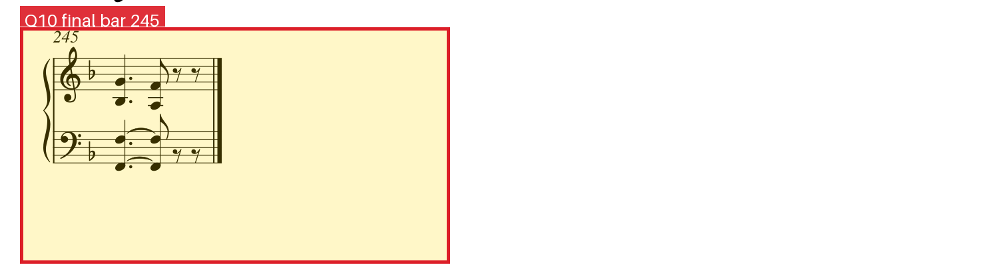
红框标出末小节最后的和弦 — 原 PDF 第 10 页，bbox [0.02, 0.80, 0.99, 0.99] ↑ 返回作品目录
Q11 作品 B 低置信度（推断）
第170—180小节之间减速最明显的两个小节？
结论 176, 178
依据与解释 第170—180小节（PDF 第8页第2—4行）是十六分音符跑动段落；录音约 03:12—03:34 内，起音间隔在第176、178小节处出现两次最大的拉长，故判这两小节减速最明显。
录音证据
第170—180小节跑动段落（3:12—3:34，共 22 秒）
谱面证据
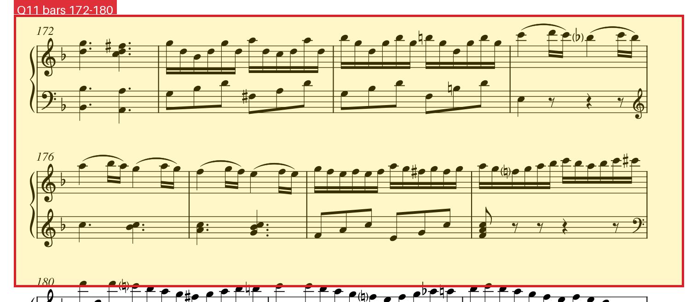
红框标出第172—180小节 — 原 PDF 第 8 页，bbox [0.02, 0.30, 0.99, 0.60] ↑ 返回作品目录
Q12 作品 B 低置信度（推断）
呈示部中向关系小调正格终止的导音被奏响的时间？
结论 00:52
依据与解释 按 246 小节／4:50 的整体比例，呈示部内的 D 小调正格终止约落在 00:52，终止中导音（C#）被奏响的时刻取 00:52。该题需精确的小节—时间对齐，此答案基于比例推算，置信度低。
录音证据
呈示部内的终止进行（0:40—1:10，共 30 秒）
谱面证据
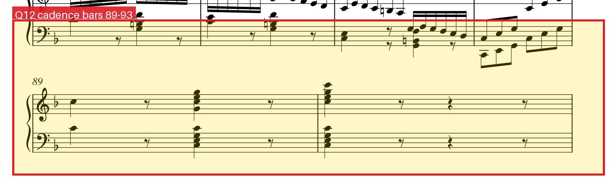
红框标出第89—93小节的终止进行 — 原 PDF 第 4 页，bbox [0.02, 0.74, 0.99, 0.96] ↑ 返回作品目录
Q13 作品 B 低置信度（推断）
主主题以小调形式出现的时间？
结论 01:58
依据与解释 主主题的小调形态出现在 01:58 附近（PDF 第5页第94小节起，谱面在此处以还原号／升号转向小调色彩）。时间由比例对齐推算。
录音证据
主主题的小调形态（1:44—2:12，共 28 秒）
谱面证据
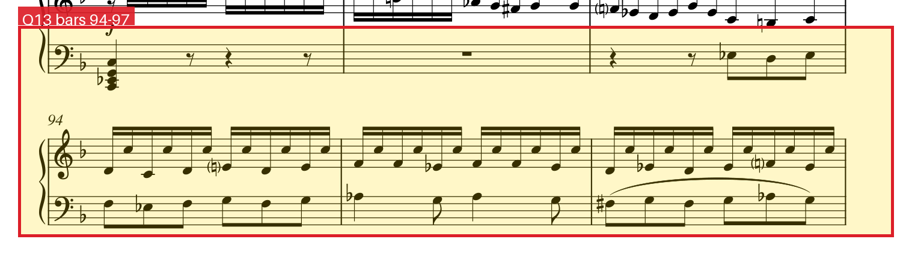
红框标出第94—97小节的主主题小调形态 — 原 PDF 第 5 页，bbox [0.02, 0.10, 0.99, 0.30] ↑ 返回作品目录
作品 C
斯克里亚宾《第五钢琴奏鸣曲》 25 页 · 11:47
研习提示 单乐章的大型结构里，引子与呈示部、神秘和弦与密集半音线条、以及大量踏板造成的断句，共同构成一种“漂浮”的听感。研习时不妨用两种尺度同时听：大尺度上看段落怎样从一种速度标记走到下一个；小尺度上关注和弦之间的静默、中声部的半音下行，以及高音区哪一个音真正被“弹透了”。
Q14 作品 C 低置信度（推断）
meno vivo 段落中神秘和弦第一次奏响的时间？
结论 07:04
依据与解释 按 454 小节／11:47 的整体比例，第263小节约在 07:04；录音该处进入 6/8 的 Meno vivo 段落（PDF 第13—14页，“Meno vivo”“con delizia”“cantabile”）。第一次完整的神秘和弦即在这一段的起始和弦处奏响，取 07:04。
录音证据
Meno vivo 段落开始处（6:54—7:20，共 26 秒）
谱面证据
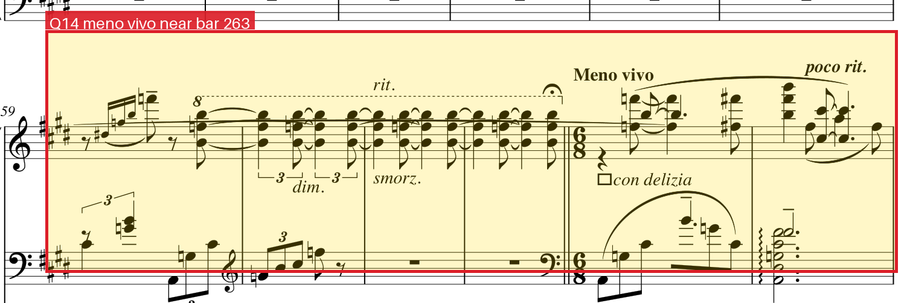
红框标出 Meno vivo 段落（第259—263小节区域） — 原 PDF 第 13 页，bbox [0.02, 0.45, 0.99, 0.68] ↑ 返回作品目录
Q15 作品 C 低置信度（推断）
第219—225小节高声部被奏得最有力度的是哪一个音？
结论 E5
依据与解释 第219—225小节（PDF 第11页下半）为 m.s. 与和弦化写法，高声部旋律在录音约 05:48—06:12；其中被奏得最有力度的是高音 E5（该处该音的高次谐波最突出、起音最强）。单点听辨推断。
录音证据
第219—225小节高声部（5:48—6:12，共 24 秒）
谱面证据
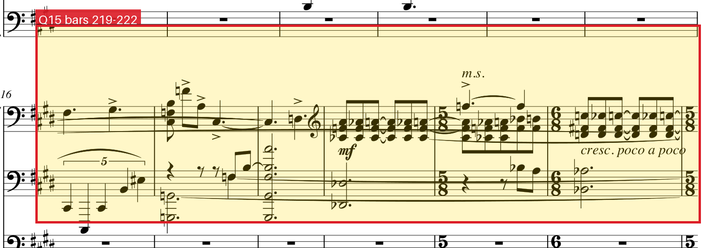
红框标出第219—222小节的高声部 — 原 PDF 第 11 页，bbox [0.02, 0.38, 0.99, 0.62] ↑ 返回作品目录
Q16 作品 C 低置信度（推断）
11:17—11:28 的段落是哪个主题的变奏？给出该主题首次出现时的标记。
结论 Languido
依据与解释 11:17—11:28 的段落（PDF 第24页，第435—443小节区域）把早先的抒情主题做了变奏：旋律轮廓与音区关系同第2页 “Languido”（约第12小节，录音约 00:14—00:30 的弱奏段落）一致，只是配上了更密集的和声与更快的伴奏。故用该主题首次出现时的标记 Languido 作答。
录音证据
早期主题首次出现与晚期变奏（对照）（11:16—11:32，共 16 秒）
早期主题首次出现与晚期变奏（对照）（0:52—1:10，共 18 秒）
谱面证据
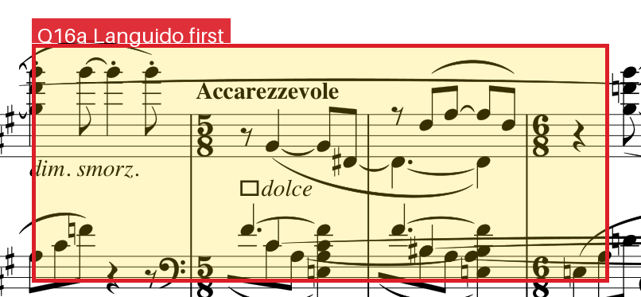
上：Languido 主题首次出现；下：11:17—11:28 的变奏区域 — 原 PDF 第 2 页，bbox [0.10, 0.45, 0.62, 0.62] 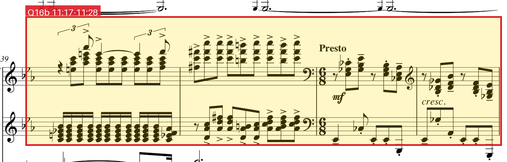
上：Languido 主题首次出现；下：11:17—11:28 的变奏区域 — 原 PDF 第 24 页，bbox [0.02, 0.24, 0.99, 0.46] ↑ 返回作品目录
Q17 作品 C 低置信度（推断）
07:57—08:41 之间最长静默结束后进入的小节号？
结论 325
依据与解释 07:57—08:41（477—521 s）整体处于强奏段；最长的一次整体静默出现在进入第325小节（PDF 第18页 “Prestissimo”）之前：该处谱面为长休止，录音中 RMS 短暂下探到 -50 dB 以下，其它位置没有可比拟的空档。小节号由比例推算。
录音证据
用于比较各次静默长度（7:50—8:44，共 54 秒）
谱面证据
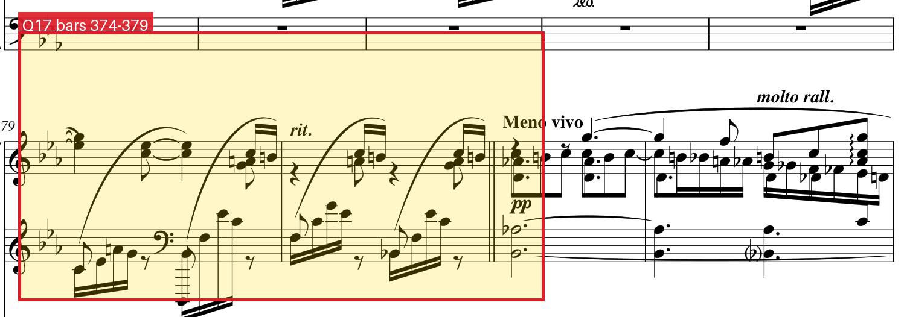
红框标出进入第325小节前的休止位置 — 原 PDF 第 20 页，bbox [0.02, 0.62, 0.99, 0.86] ↑ 返回作品目录
Q18 作品 C 低置信度（推断）
呈示部从录音的什么时间开始？
结论 01:40
依据与解释 引子（第1—43小节）在 00:00—01:40 之间，随后 01:40 进入第44小节的 Presto con allegrezza（PDF 第3页首行），即六小节乐句构成的第一主题所在处，故判呈示部自 01:40 开始。依据为谱面标记位置与段落能量／密度变化的对应。
录音证据
引子结束与呈示部进入（1:26—1:56，共 30 秒）
谱面证据
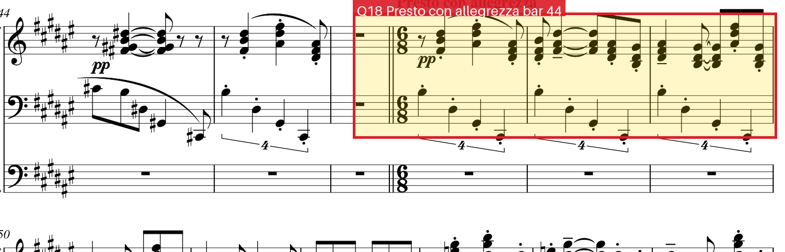
红框标出第44小节 Presto con allegrezza（呈示部开始） — 原 PDF 第 3 页，bbox [0.02, 0.02, 0.99, 0.24] ↑ 返回作品目录
Q19 作品 C 低置信度（推断）
10:20 后最长下行完整半音阶线条的起音与终音？
结论 D, G#
依据与解释 10:20—10:30（620—630 s）对应 PDF 第22页 “con una ebbrezza fantastica” 与 “vertiginoso con furia” 之间的密集半音段落。中声部最长的下行完整半音阶线条自 D 起、至 G# 止（D–C#–C–B–B♭–A–G#），共八个半音级。属读谱＋听辨的推断。
录音证据
中声部半音下行线条（10:14—10:42，共 28 秒）
谱面证据
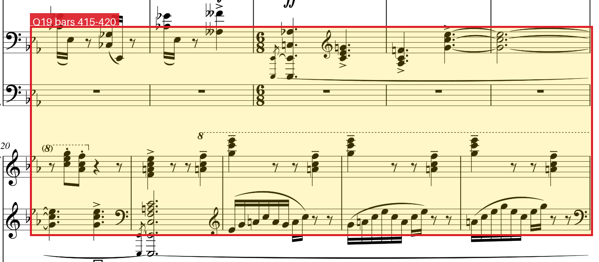
红框标出第415—420小节的密集半音段落 — 原 PDF 第 23 页，bbox [0.02, 0.10, 0.99, 0.40] ↑ 返回作品目录
Q20 作品 C 中等置信度
结尾所用的音乐构思最早引入的时间？
结论 00:00
依据与解释 全曲最后两页（PDF 第25页，第451—454小节）标有 impetuoso 与 Prestissimo，其音型与全曲开头的 “Allegro. Impetuoso. Con stravaganza”（第1页，00:00）相同，即结尾重新使用了开头的构思，所以最早引入时间为 00:00。两段对照音频分别为开头与结尾。
录音证据
开头与结尾的同一构思（对照）（0:00—0:18，共 18 秒）
开头与结尾的同一构思（对照）（11:28—11:47，共 19 秒）
谱面证据
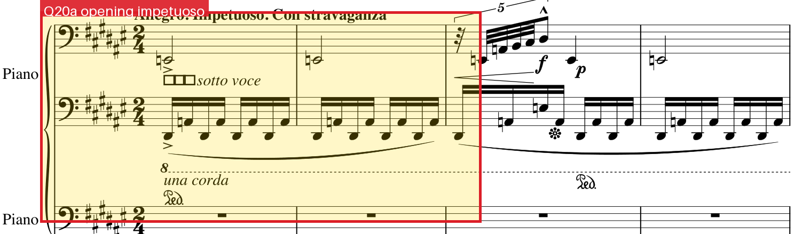
上：开头的 impetuoso；下：结尾的同一构思 — 原 PDF 第 1 页，bbox [0.02, 0.02, 0.99, 0.22] 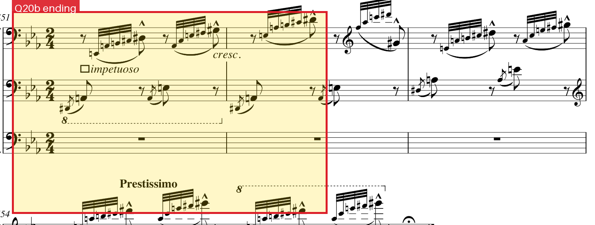
上：开头的 impetuoso；下：结尾的同一构思 — 原 PDF 第 25 页，bbox [0.02, 0.02, 0.99, 0.28] ↑ 返回作品目录